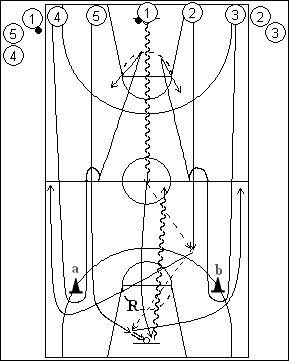

Catégorie : FASTBREAK (Fb-008)
Déroulement
- Cinq files de joueurs à une baseline. Les ballons sont dans la file centrale.
- Le drill débute au premier dribble du premier joueur de la file 1. Les premiers joueurs des cinq files partent en même temps. Le premier joueur de la file 4 sprinte autour du cône a et effectue la transition défensive (toucher un point central de la raquette de départ avant de pouvoir remonter en défense). Idem pour le premier joueur de la file 3 qui contourne le cône b. Le premier joueur de la file 1 dribble jusqu’à la ligne médiane passe au premier de la file 2 ou 5 (soit ici au premier 2) qui prolonge vers l’autre (soit ici 5) pour un lay-up. Le premier joueur de la file 1 réalise le rebond et attaque avec 2, qui a contourné le cône a, et 5, qui a contourné le cône b. Trois contre deux (contre 3 et 4) vers le panneau de départ.
- 1 va ensuite dans le file 2; 2 va en 3; 3 va en 4; 4 va en 5 et 5 réalise le rebond et va dans la file 1 avec ballon. Les cinq joueurs suivants démarrent.
Coaching points
- Séquence de la contre-attaque travaillée : la réussite du panier en situation de surnombre (3 contre 2).
- Dans le même temps, soigner les autres points : défendre à 2 contre 3, exécuter la transition défensive correcte, etc ...